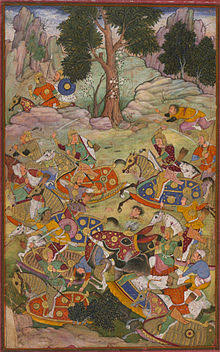
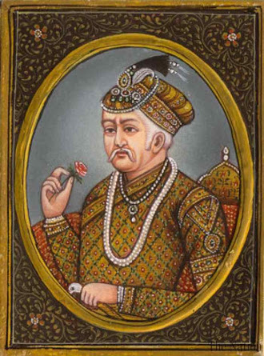
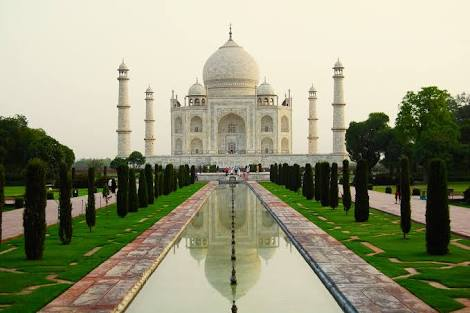

THE MUGHAL DYNASTY
The Mughal Empire was an empire in the Indian subcontinent, founded in 1526. It was established and ruled by a Muslim dynasty with Turco-Mongol Chagatai roots from Central Asia, but with significant Indian Rajput and Persian ancestry through marriage alliances; only the first two Mughal emperors were fully Central Asian, while successive emperors were of predominantly Rajput and Persian ancestry. The dynasty was Indo-Persian in culture, combining Persianate culture with local Indian cultural influences visible in its traits and customs.
The Mughal Empire at its peak extended over nearly all of the Indian subcontinent and parts of Afghanistan. It was the second largest empire to have existed in the Indian subcontinent, spanning approximately four million square kilometres at its zenith, after only the Maurya Empire, which spanned approximately five million square kilometres. The Mughal Empire ushered in a period of proto-industrialization, and around the 17th century, Mughal India became the world's largest economic power, accounting for 24.4% of world GDP, and the world leader in manufacturing, producing 25% of global industrial output up until the 18th century. The Mughal Empire is considered "India's last golden age" and one of the three Islamic Gunpowder Empires (along with the Ottoman Empire and Safavid Persia).
The Mughal Empire did not try to intervene in the local societies during most of its existence, but rather balanced and pacified them through new administrative practices and diverse and inclusive ruling elites, leading to more systematic, centralised, and uniform rule.

Babur and Humayun (1526–1556)
The Mughal Empire was founded by Babur (reigned 1526–1530), a Central Asian ruler who was descended from the Turco-Mongol conqueror Timur (the founder of the Timurid Empire) on his father's side and from Chagatai, the second son of the Mongol ruler Genghis Khan, on his mother's side. Ousted from his ancestral domains in Central Asia, Babur turned to India to satisfy his ambitions. He established himself in Kabul and then pushed steadily southward into India from Afghanistan through the Khyber Pass. Babur's forces occupied much of northern India after his victory at Panipat in 1526. The preoccupation with wars and military campaigns, however, did not allow the new emperor to consolidate the gains he had made in India.
The instability of the empire became evident under his son, Humayun (reigned 1530–1556), who was driven out of India and into Persia by rebels. The Sur Empire (1540–1555), founded by Sher Shah Suri(reigned 1540–1545), briefly interrupted Mughal rule. Humayun's exile in Persia established diplomatic ties between the Safavid and Mughal Courts, and led to increasing Persian cultural influence in the Mughal Empire. The restoration of Mughal rule began after Humayun's triumphant return from Persia in 1555, but he died from a fatal accident shortly afterwards.
Akbar to Aurangzeb (1556–1707)
Akbar the Great (reigned 1556–1605) was born Jalal-ud-din Muhammad in the Rajput Umarkot Fort, to Humayun and his wife Hamida Banu Begum, a Persian princess. Akbar succeeded to the throne under a regent, Bairam Khan, who helped consolidate the Mughal Empire in India. Through warfare and diplomacy, Akbar was able to extend the empire in all directions and controlled almost the entire Indian subcontinent north of the Godavari River. He created a new class of nobility loyal to him from the military aristocracy of India's social groups, implemented a modern government, and supported cultural developments. At the same time, Akbar intensified trade with European trading companies. India developed a strong and stable economy, leading to commercial expansion and economic development. Akbar allowed free expression of religion, and attempted to resolve socio-political and cultural differences in his empire by establishing a new religion, Din-i-Ilahi, with strong characteristics of a ruler cult. He left his successors an internally stable state, which was in the midst of its golden age, but before long signs of political weakness would emerge.
Jahangir (born Salim, reigned 1605–1627) was born to Akbar and his wife Mariam-uz-Zamani, an Indian Rajput princess. Jahangir ruled the empire at its peak, but he was addicted to opium, neglected the affairs of the state, and came under the influence of rival court cliques. Shah Jahan (reigned 1628–1658) was born to Jahangir and his wife Jagat Gosaini, a Rajput princess. During the reign of Shah Jahan, the culture and splendour of the luxurious Mughal court reached its zenith as exemplified by the Taj Mahal. The maintenance of the court, at this time, began to cost more than the revenue.
Shah Jahan's eldest son, the liberal Dara Shikoh, became regent in 1658, as a result of his father's illness. However, a younger son, Aurangzeb (reigned 1658–1707), allied with the Islamic orthodoxy against his brother, who championed a syncretistic Hindu-Muslim culture, and ascended to the throne. Aurangzeb defeated Dara in 1659 and had him executed. Although Shah Jahan fully recovered from his illness, Aurangzeb declared him incompetent to rule and had him imprisoned. During Aurangzeb's reign, the empire gained political strength once more. Aurangzeb expanded the empire to include almost the whole of South Asia, but at his death in 1707, many parts of the empire were in open revolt. Aurangzeb is considered India's most controversial king, with some historians arguing his religious conservatism and intolerance undermined the stability of Mughal society, while other historians question this, noting that he built Hindu temples, employed significantly more Hindus in his imperial bureaucracy than his predecessors did, opposed bigotry against Hindus and Shia Muslims, and married Hindu Rajput princess Nawab Bai.
Babur
Babur was the eldest son of Umar Sheikh Mirza, governor of Farghana and great grandson of Timur the Great. He ascended the throne of Farghana in its capital Akhsikent in 1494 at the age of twelve and faced rebellion. He conquered Samarkand two years later, only to lose the vilayat of Fergana soon after. In his attempt to reconquer Fergana, he lost control of Samarkand. In 1501, his attempt to recapture both vilayats went in vain as he was defeated by Muhammad Shaybani Khan. In 1504, he conquered Kabul, which was under the rule of the infant heir of Ulugh Begh. Babur formed a partnership with Safavid ruler Ismail I and reconquered parts of Turkistan, including Samarkand, only to again lose it and the other newly conquered lands to the Sheybanids.
After losing Samarkand for the third time, Babur turned his attention to creating his empire in the north. At that time, the Indo-Gangetic Plain of the northern Indian Subcontinent was ruled by Ibrahim Lodi of the Afghan Lodi dynasty, whereas Rajputana was ruled by a Hindu Rajput Confederacy, led by Rana Sanga of Mewar. According to historical records and Baburnama (autobiography written by Babur himself) Daulat Khan Lodi invited him to attack on Delhi where Ibrahim Lodi was ruling at that time. He sent his ambassador to him to support him in his attack on Delhi. Also in 1524, [Daulat Khan Lodi], a rebel of the Lodi dynasty, invited Babur to overthrow Ibrahim and become ruler. Babur defeated Ibrahim Lodi at the First Battle of Panipat in 1526 CE and founded the Mughal empire. However, he again faced opposition, this time from Rana Sanga of Mewar and Medini Rai,another rajput ruler in the Battle of Chanderi who considered Babur a foreigner. The Rana was defeated in the Battle of Khanwa.
Babur married several times. Notable among his sons are Humayun, Kamran Mirza and Hindal Mirza. Babur died in 1530 and was succeeded by Humayun. According to Babur's wishes, he was buried in Bagh-e-Babur in Kabul, Afghanistan. Being a patrilineal descendant of Timur, Babur considered himself a Timurid and Chagatai Turkic.[6] He is considered a national hero in Uzbekistan and Kyrgyzstan. Many of his poems also have become popular folk songs. He wrote his autobiography, Baburnama, in Chaghatai Turkic and this was translated into Persian during Akbar's reign.
Humayun
was the second emperor of the Mughal Empire, who ruled over territory in what is now Afghanistan, Pakistan, and parts of northern India and Bangladesh from 1530–1540 and again from 1555–1556. Like his father, Babur, he lost his kingdom early but regained it with the aid of the Safavid dynasty of Persia, with additional territory. At the time of his death in 1556, the Mughal Empire spanned almost one million square kilometres.
In December 1530, Humayun succeeded his father to the throne of Delhi as ruler of the Mughal territories in the Indian subcontinent. At the age of 23, Humayun was an inexperienced ruler when he came to power. His half-brother Kamran Mirza inherited Kabul and Lahore, the northernmost parts of their father's empire. Mirza was to become a bitter rival of Humayun.
Humayun lost Mughal territories to Sher Shah Suri, but regained them 15 years later with Safavid aid. Humayun's return from Persia was accompanied by a large retinue of Persian noblemen and signalled an important change in Mughal court culture. The Central Asian origins of the dynasty were largely overshadowed by the influences of Persian art, architecture, language and literature. There are many stone carvings and thousands of Persian manuscripts in India dating from the time of Humayun.
Subsequently, Humayun further expanded the Empire in a very short time, leaving a substantial legacy for his son, Akbar. His peaceful personality, patience and non-provocative methods of speech earned him the title ’Insan-i-Kamil (Perfect Man), among the Mughals.
Akbar

Akbar was the third Mughal emperor, who reigned from 1556 to 1605. Akbar succeeded his father, Humayun, under a regent, Bairam Khan, who helped the young emperor expand and consolidate Mughal domains in India. A strong personality and a successful general, Akbar gradually enlarged the Mughal Empire to include nearly all of the Indian Subcontinentnorth of the Godavari river. His power and influence, however, extended over the entire country because of Mughal military, political, cultural, and economic dominance. To unify the vast Mughal state, Akbar established a centralised system of administration throughout his empire and adopted a policy of conciliating conquered rulers through marriage and diplomacy. To preserve peace and order in a religiously and culturally diverse empire, he adopted policies that won him the support of his non-Muslim subjects. Eschewing tribal bonds and Islamic state identity, Akbar strove to unite far-flung lands of his realm through loyalty, expressed through an Indo-Persian culture, to himself as an emperor who had near-divine status.
Mughal India developed a strong and stable economy, leading to commercial expansion and greater patronage of culture. Akbar himself was a patron of art and culture. He was fond of literature, and created a library of over 24,000 volumes written in Sanskrit, Urdu, Persian, Greek, Latin, Arabic and Kashmiri, staffed by many scholars, translators, artists, calligraphers, scribes, bookbinders and readers. Akbar also established the library of Fatehpur Sikri exclusively for women, and he decreed that schools for the education of both Muslims and Hindus should be established throughout the realm. Holy men of many faiths, poets, architects, and artisans adorned his court from all over the world for study and discussion. Akbar's courts at Delhi, Agra, and Fatehpur Sikri became centres of the arts, letters, and learning. Perso-Islamic culture began to merge and blend with indigenous Indian elements, and a distinct Indo-Persian culture emerged characterized by Mughal style arts, painting, and architecture. Disillusioned with orthodox Islam and perhaps hoping to bring about religious unity within his empire, Akbar promulgated Din-i-Ilahi, a syncretic creed derived mainly from Islam and Hinduism as well as some parts of Zoroastrianism and Christianity. A simple, monotheistic cult, tolerant in outlook, it centered on Akbar as a prophet, for which he drew the ire of the ulema and orthodox Muslims. Many of his courtiers followed Din-i-Ilahi as their religion as well, as many believed that Akbar was a prophet.
Jahangir
Prince Salim, later Jahangir, was born on 31 August 1569, in Fatehpur Sikri, to Akbar and Jodha Bai. Prince Salim forcefully succeeded to the throne on Thursday, 3 November 1605, eight days after his father's death emerging victorious in the vicious struggle for succession between the five prominent and legitimate sons. Salim ascended to the throne with the title of Nur-ud-din Muhammad Jahangir Badshah Ghazi and thus began his 22-year reign at the age of 36. Jahangir soon after had to fend off his own son, Prince Khusrau Mirza, when the latter attempted to claim the throne based on Akbar's will to become his next heirs. Khusrau Mirza was defeated in 1606 and confined in the fort of Agra. Jahangir considered his third son Prince Khurram (future Shah Jahan), his favourite. In 1622, Khurram murdered his blinded elder brother Khusrau Mirza in order to smooth his own path to the throne. An aesthete, Jahangir decided to start his reign with a grand display of "Justice", as he saw it. To this end, he enacted Twelve Decrees that are remarkable for their liberalism and foresight. During his reign, there was a significant increase in the size of the Mughal Empire, half a dozen rebellions were crushed, prisoners of war were released and the work of his father, Akbar, continued to flourish. Much like his father, Jahangir was dedicated to the expansion of Mughal held territory through conquest. During this regime he would target the peoples of Assam near the eastern frontier and bring a series of territories controlled by independent rajas in the Himalayan foothills from Kashmir to Bengal. Jahangir would challenge the hegemonic claim over what became later Afghanistan by the Safavid rulers with an eye on Kabul, Peshawar and Kandahar, which were important centres of the central Asian trade system that northern India operated within.
In 1622, Jahangir sent his son Prince Khurram against the combined forces of Ahmednagar, Bijapurand Golconda. After his victory Khurram turned against his father and make a bid for power. As with the insurrection of his eldest son [Khusrau Mirza], Jahangir was able to defeat the challenge from within his family and retain power. Jahangir promised to protect Islam and granted general amnesty to his opponents. He was also notable for his patronage of the arts, especially of painting. During his reign the distinctive style of Mughal painting expanded and blossomed. Jahangir supported a flourishing culture of court painters. Furthermore, Jahangir preserved the Mughal tradition of a highly centralised form of government. Jahangir made the precepts of Sunni Islam the cornerstone of his state policies. A faithful Muslim, as evidenced by his memoirs, he expressed his gratitude to Allah for his many victories. Jahangir, as a devout Muslim, did not let his personal beliefs dictate his state policies.
Shah Jahan

Shah Jahan was widely considered to be the most competent of Emperor Jahangir's four sons and after Jahangir's death in late 1627, when a war of succession ensued, Shah Jahan emerged victorious. He put to death all of his rivals for the throne and crowned himself emperor in January 1628 in Agra under the regnal title "Shah Jahan" (which was originally given to him as a princely title). Although an able military commander, Shah Jahan is perhaps best remembered for his architectural achievements. The period of his reign is widely considered to be the golden age of Mughal architecture. Shah Jahan commissioned many monuments, the best known of which is the Taj Mahal in Agra, which entombs his beloved wife Mumtaz Mahal.
In September 1657, Shah Jahan fell seriously ill, which set off a war of succession among his four sons, in which his third son Aurangzeb, emerged victorious. Shah Jahan recovered from his illness, but Aurangzeb put his father under house arrest in Agra Fort from July 1658 until his death in January 1666. On 31 July 1658, Aurangzeb crowned himself emperor under the title "Alamgir."
The Mughal Empire reached the pinnacle of its glory during Shah Jahan's reign and he is widely considered to be one of the greatest Mughal emperors.
Aurangzeb
was the sixth, and widely considered the last effective Mughal emperor. His reign lasted for 49 years from 1658 until his death in 1707.
Aurangzeb was a notable expansionist and during his reign, the Mughal Empire reached its greatest extent, ruling over nearly all of the Indian subcontinent. During his lifetime, victories in the south expanded the Mughal Empire to 4 million square kilometers, and he ruled over a population estimated to be over 158 million subjects, with an annual yearly revenue of $450 million (more than ten times that of his contemporary Louis XIV of France), or £38,624,680 (2,879,469,894 rupees) in 1690. Under his reign, India surpassed China once again to become the world's largest economy, worth over $90 billion, nearly a quarter of world GDP in 1700.
Aurangzeb has been subject to controversy and criticism for his policies that abandoned his predecessors' legacy of pluralism and religious tolerance, citing his introduction of the Jizya tax, destruction of Hindu temples, execution or forced conversion of his non-Muslim subjects to Islam and execution of the ninth Sikh guru, Guru Tegh Bahadur. However, other historians question this, arguing that his destruction of temples has been exaggerated, and noting that he also built temples, also destroyed Islamic mosques, paid for the maintenance of temples, employed significantly more Hindus in his imperial bureaucracy than his predecessors did, and opposed bigotry against Hindus and Shia Muslims.
It was at the end of his reign that the downfall of the Mughal Empire began due to his policy of religious intolerance. Rebellions and wars eventually led to the exhaustion of the imperial Mughal treasury and army. He was a strong-handed authoritarian ruler, and following his death the expansionary period of the Mughal Empire came to an end. Nevertheless, the contiguous territory of the Mughal Empire still remained intact more or less until the reign of Muhammad Shah.